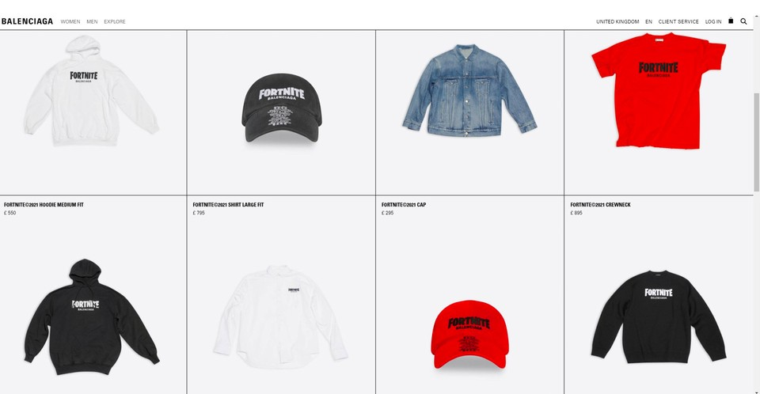
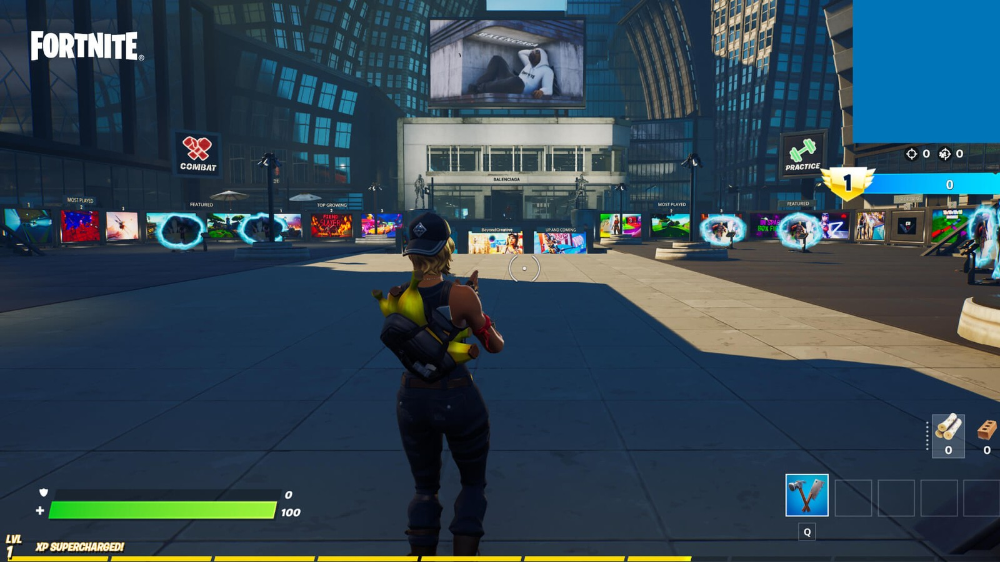
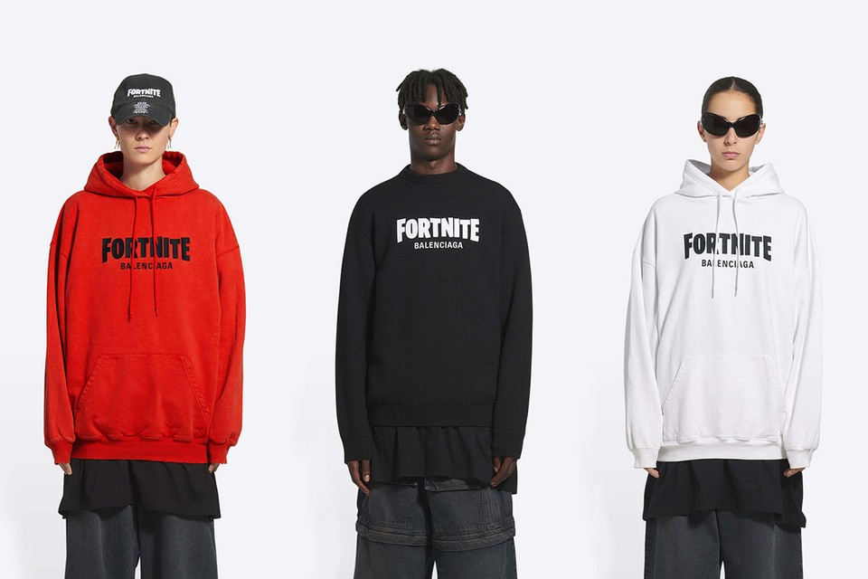

ENTRETENIMIENTO
27 de noviembre de 2021 | Por Emanuel Navarro
Los videojuegos solían ser simples. Compraría uno, se lo llevaría a casa, lo reproduciría y luego lo repetiría hasta que la consola finalmente dejara de leer el disco. Cuando títulos como Tony Hawk Pro Skater y Metal Gear Solid reinaban de forma suprema, no se hablaba de monedas y V-bucks. Lo sé, estoy regalando mi edad aquí ...
Pero los tiempos han cambiado desde hace mucho tiempo. Con el avance de la tecnología, han aparecido mundos en línea y un diseño de juego depredador concomitante que no permite que las personas compitan en el extremo superior sin gastar más dinero. Es esencialmente una estructura de juego y, como era de esperar, hay muchas historias de terror en abundancia. Una búsqueda en Google con las palabras "un adolescente gasta dinero en juegos" acumula innumerables historias que no son exclusivas de un desarrollador en particular.
“Los esquemas de monetización de juegos se han vuelto cada vez más sofisticados y se han presentado de manera más prominente dentro de los juegos en línea populares”, escribieron los autores Daniel L. King y Paul H. Delfabbro en la revista Addiction . “En nuestra opinión, algunos de estos esquemas podrían considerarse depredadores. Los esquemas de monetización depredadores generalmente involucran sistemas de compra en el juego que disfrazan o retienen el verdadero costo a largo plazo de la actividad hasta que los jugadores ya están comprometidos financiera y psicológicamente ".
Esta semana, Balenciaga se convirtió en la primera marca de lujo en ingresar al mundo Fortnite , gracias a una asociación que llega con elementos tanto digitales como físicos. La reacción se ha mezclado. Parece que hay una tensión entre llamar la ropa como la ropa de calle demasiado cara que evidentemente es, y una admiración por el hecho de que, bueno, es tan típico del pensamiento del cerebro galáctico de Balenciaga y Demna Gvasalia. Si no puede pagar, o no está interesado en, la sudadera con capucha de $ 750 (ya está agotada y definitivamente no está dirigida a su jugador promedio de Fortnite de todos modos), entonces compre una versión de metaverso, la más cara de las cuales cuesta 1,500 V -Bucks, aproximadamente el equivalente a $ 12. Este es un negocio lucrativo para Fortnitecreador, Epic Games, que gana miles de millones solo con las compras en el juego.
Con 2.700 millones de jugadores en todo el mundo, parece una obviedad que la moda quiera hacerse un hueco en este territorio. Sin embargo, también siente que hay un elefante en la sala donde estos esquemas de monetización pueden estigmatizar a los jugadores más jóvenes que no pueden permitirse gastar dinero en complementos. En un artículo del año pasado, Polygon habló con varios niños que habían experimentado acoso cibernético porque jugaban al juego como un "moroso" o un personaje predeterminado sin ninguna desventaja. En resumen, cuanto más preparado esté tu personaje con los desbloqueables, más influencia tendrás.
Cuando las marcas de moda con aspiraciones se involucran, lo que está en juego es aún mayor. Claro, $ 12 puede que no parezca mucho a primera vista. Pero, ¿qué sucede cuando estos lanzamientos comienzan a ser más frecuentes? ¿Cuándo tiene un precio más alto? ¿Cuándo el equipo está destinado a celebridades e influencers? ¿Cuando no solo Balenciaga está involucrado, sino también marcas rivales? Los gustos de Gucci, Louis Vuitton y Dior ya han hecho incursiones en la arena virtual, y es seguro que su presencia solo se hará más fuerte en los próximos años. "Oh, ¿no tienes la nueva sudadera con capucha de Balenciaga en Fortnite ? Entonces no puedes sentarte con nosotros en la vida real", es la noción a la que me refiero. No es solo el dinero, sino la salud mental lo que está en juego.
"Balenciaga y Kering están jugando a largo plazo", dice Iolo Edwards, director de High Fashion Talk . "Recordando que la mayoría de FortniteLos jugadores son realmente jóvenes, cuando se trata del momento en que tienen un ingreso disponible donde posiblemente podrían comprar Balenciaga, habrán pasado por un ciclo de ser tontos y estarán de regreso y con recuerdos de la época en que hicieron Fortnite, lo que lo hace nostálgico. ; uno de los impulsores emocionales más poderosos de las compras. También está, por supuesto, lo que siempre han hecho Balenciaga y Demna, que es mantenerse en las noticias a través de la indignación. Hoy no se trata tanto de ser bueno, sino de cuántas personas puedes llegar. En conjunto, llegar a alguien 10 veces se convierte en una venta, ya sea que la forma en que fue alcanzada sea positiva o neutral; incluso negativo a veces ".
"Esta idea de compras dentro del juego y pago por jugar me recuerda a ' Crazy Frog ', el tono de llamada que era popular cuando estaba en la escuela secundaria", continúa Edwards. "Enviarías un mensaje de texto a un número para obtener el tono de llamada, lo que mi yo adolescente pensó que era imperativo, sin darme cuenta de que luego te cobraban todas las semanas hasta que cancelaste.
"En aquel entonces, los anuncios de los tonos de llamada parecían sórdidos y se reconocía ampliamente que era sospechoso, a pesar de que era poderoso. Por el contrario, la moda de pago por jugar de Balenciaga se presenta como completamente legítima, lo que la justifica mucho más en los niños. Casi no hay fricción para comprar. También está el hecho de que los muestres en el juego para que tu grupo de amigos recuerde constantemente su posición social o financiera cuando lo vean. Los uniformes escolares se aplican para detener eso; pero nosotros ¡Ten esto realzándolo! "
Asistí a una escuela pública cuando era niña, donde lamentablemente no era raro ver a ciertos niños excluidos de los círculos sociales porque no tenían las últimas Nike o camisetas de fútbol. Teniendo eso en cuenta, las palabras de Iolo se sienten especialmente pertinentes. Una de las cosas más poderosas de los videojuegos fue que eran un gran ecualizador. Una vez que se cargó la pantalla de la consola, todos pasaron por la misma experiencia y pudieron relacionarse entre sí en consecuencia. En estos días, ese no es el caso. Siempre hay más cosas que comprar, algo más nuevo que descubrir. Es posible que empresas como EA se hayan lavado las manos de responsabilidad en lo que respecta al sistema de compra (puede ver su patética defensa aquí ), pero hay algunos gobiernos que están tomando medidas. Ver Bélgica, donde los puntos FIFA han sido prohibidos.
"Es el tipo de presión que no quieres poner sobre niños tan pequeños", continúa Edwards. "Es suficiente que tengan que comprar el juego y un dispositivo para jugarlo; la especificación y la potencia de los cuales determinan lo fácil que es jugar. Al menos esas cosas son compras únicas; no sabemos si Balenciaga es ir a ordeñar a los niños cada temporada, pretemporada, colaboraciones especiales. ¿Y qué puertas abre esto para que otras marcas hagan lo mismo? Los adultos están preparados para comprender que la ropa de diseñador no es una necesidad, aunque muchos se endeudan con las tarjetas de crédito. Para un niño de nueve años que está convencido de que tener Balenciaga doggo es el fin de todo, es un poco más difícil. Tal vez sea bueno que aprendan desde pequeños, pero prefiero proteger esa inocencia e ingenuidad ".
Como comentamos en nuestro reciente informe técnico, los crossovers de moda y videojuegos no son nada nuevo y llegaron para quedarse. Esperemos que las marcas jueguen limpio cuando se trata de impulsar su producto.
2do video
Intro
| 15 de agosto de 2021 |
Concepto : Es la intro actual de el canal de Ema "Cultura General" que estará bigente solo por un año. Hay unos tambores de fondo a los cuales los acompañan una guitarra electrica y ya de último se puede escuchar la voz de Aarón (El mejor amigo de Ema) y lo que dice Aarón en la intro es "QUE TE VALGA VERGA MAJE" lo cual motivo a Ema a crear un canal en YouTube y hacer su primer video.
Porque lo motivo : "Porque lo que Aarón dijo fue basicamente como "QUE NO TE IMPORTE LO QUE DIGAN LOS DEMÁS" o "SIMPLEMTE SOLO HAZLO Y ATREVETE" y me pegaron bien profundo esas palabras porque una de las cosas de las cuales la gente se arrepienten en su vida es no averlo intentado, se quedan con el "¿QUE HUBIERA PASADO SI LO INTENTAVA?, ¿ESTARÍA EN EL LUGAR QUE ESTOY AHORA MISMO?, ¿SERÍA FELIZ SI LO HUBIERA INTENTADO?" no quiero arrepentirme de nada, el día de mi muerte sabré porque viví" Dijo Ema al preguntarle por que lo inspirarón esas palabra tan sabias de Aarón.
Ver más3er video
Juego Salvar a mi hermana
| 15 de agosto de 2021 |
Concepto : Es un tutorial acerca de uno de los juegos más famosos y divertidos de juegos diarios el cual es "salvar a mi hermana".
En el video Ema da una clase de tutorial acerca de los comendos del juego y de como salvar a tu hermana, claro si es que te atreves a jugarlo.
Ver más